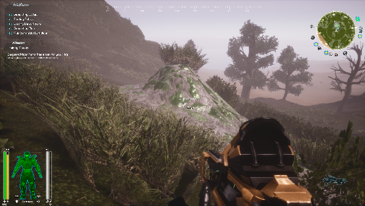

Before you can build or craft anything in GearStorm you will need resources. Resources consist of minerals you find by mining in the ground, materials you gather from plants and rocks, and things you find around the world.
Minerals:
Most minerals you find buried by mining in the world, you will see minerals on the surface marked with their periodic element symbols (ie: "Cu" for Copper) on your mini map and main map when you get close enough. You can also just start digging to find minerals.
Minerals on the map:

Mineral Outcropping (Uranium, "U"):
Plants and crystals:
Some items like "Apatite" (the large crystal required for building cores and other things) are found around the world naturally. You can find Apatite, for example in natural caves growing out of the walls or floors
Apatite in the inventory menus:

Apatite in found in a cave:

Wood is a very common needed resource, the most obvious source is trees, of course!
Tree in the world: